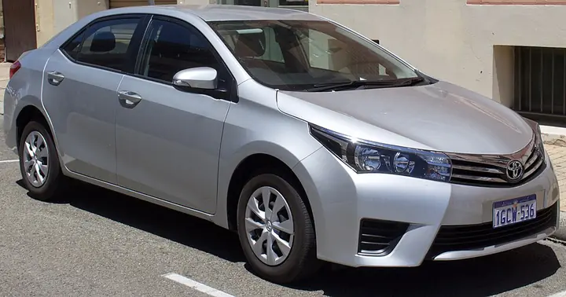
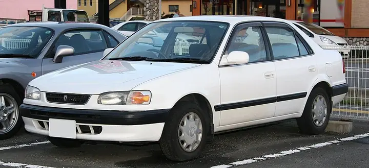
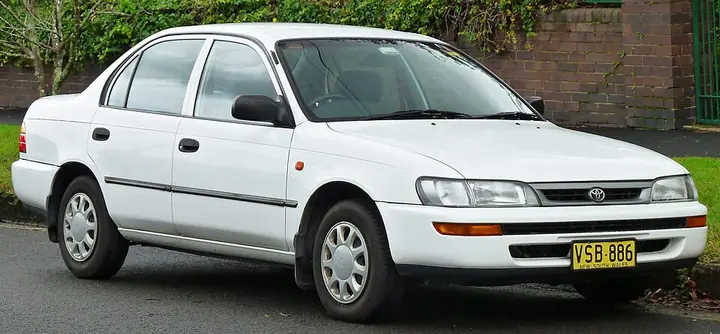
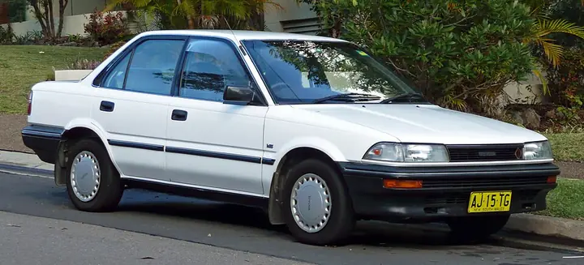
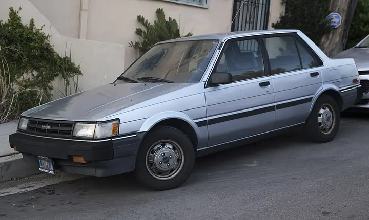
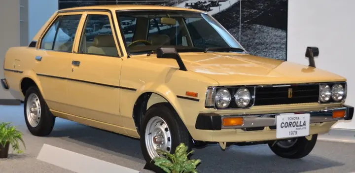
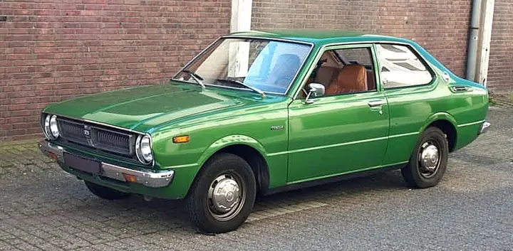
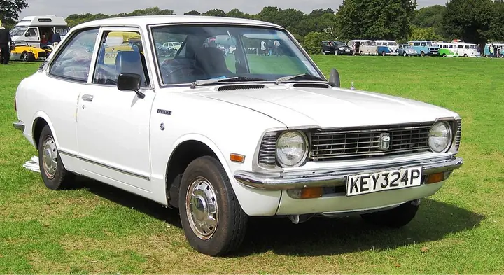

Toyota Corolla
Twelfth generation (E210; 2018) · 2018–present
Abstract
This generation of the Toyota Corolla is a compact car/Small family car (C), built June 2018 – present (hatchback) in Japan: Toyota, Aichi (Takaoka and Tsutsumi plant), Brazil: Indaiatuba (Toyota do Brasil), China: Guangzhou (GAC Toyota); Tianjin (FAW Toyota) and other plants. Body styles: 4-door saloon/sedan, 5-door hatchback, 5-door estate/station wagon, 5-door panel van (UK only). Layout: Front-engine, front-wheel-drive. Designed by Yoshiki Konishi (2016). This generation has its own article: Toyota Corolla (E210).

_Ascent_Sport_hatchback_(2018-11-02)_01.jpg){kind=link}
1Specifications
| Production | June 2018 – present (hatchback)January 2019 – present (saloon/estate) |
|---|---|
| Model years | 2019–present (hatchback)2020–present (saloon) |
| Assembly | Japan: Toyota, Aichi (Takaoka and Tsutsumi plant)Brazil: Indaiatuba (Toyota do Brasil)China: Guangzhou (GAC Toyota); Tianjin (FAW Toyota)Taiwan: Zhongli (Kuozui)Thailand: Chachoengsao (TMT)Turkey: Arifiye (TMMT, saloon only)United Kingdom: Burnaston, Derbyshire (TMUK, hatchback and estate only)United States: Blue Springs, Mississippi (TMMMS, USDM models) |
| Designer | Yoshiki Konishi (2016) |
| Class | Compact car/Small family car (C) |
| Body style | 4-door saloon/sedan5-door hatchback5-door estate/station wagon5-door panel van (UK only) |
| Layout | Front-engine, front-wheel-driveFront-engine, four-wheel-drive |
| Platform | TNGA: GA-C |
| Engine | Petrol:1.2 L 8NR-FTS VVT-iW turbo I41.2 L 9NR-FTS VVT-iW turbo I4 (China)1.5 L M15A-FKS VVT-iE I31.5 L M15B-FKS VVT-iE I3 (China)1.5 L M15C-FKS VVT-iE I3 (China; Levin)1.6 L 1ZR-FE/1ZR-FAE Dual VVT-i/Valvematic I41.8 L 2ZR-FE/2ZR-FAE Dual VVT-i/Valvematic I42.0 L M20A-FKS I42.0 L M20C-FKS I4 (China; Levin GT)2.0 L M20E-FKS I4 (China; Allion)Petrol flex-fuel:1.6 L 1ZR-FBE I41.8 L 2ZR-FBE I42.0 L M20A-FKB I4Petrol hybrid:1.8 L 2ZR-FXE I41.8 L 8ZR-FXE I4 (China)2.0 L M20A-FXS I4 |
| Transmission | 6-speed EG60 manual6-speed EC65 manualK120 CVT with physical first gearK313 CVTHybrid Synergy Drive (eCVT) |
| Battery | 1.3 kWh (hybrid) |
| Wheelbase | Hatchback (Japanese market):2640 mmSaloon/estate:2700 mmAllion/Levin GT/Levin L2750 mmCorolla (China 2025+)2750 mm |
| Length | Saloon:4495 mm (Japan)4630 mm (international)4635 mm (SE/XSE/GR Sport)4640 mm (Levin)4695 mm (Levin GT / Levin L)4710 mm (China 2025+)4720 mm (Allion)Hatchback:4370 mm (international)4375 mm (Japan)4380 mm (GR Sport)Estate:4495 mm (Japan)4650 mm (international)4670 mm (TREK) |
| Width | Saloon:1745 mm (Japan)1780 mm (international)Hatchback:1790 mmEstate:1745 mm (Japan)1790 mm (international)1805 mm (TREK) |
| Height | 1420 mm (SE/XSE Apex)1435–1455 mm (international)1460 mm (Japan/TREK) |
| Weight | Saloon: 1290–1430 kgHatchback: 1240–1510 kgEstate: 1300–1560 kg |
| Also called | Toyota Auris (hatchback, Taiwan, 2018–2020)Toyota Allion (long-wheelbase saloon, FAW Toyota; China)Toyota Levin (saloon, GAC Toyota; China)Toyota Levin GT / Levin L (long-wheelbase saloon, GAC Toyota; China)Suzuki Swace (estate, Europe, 2020–2025) |
| Related | Toyota GR CorollaToyota C-HR (AX10/50)Toyota Corolla CrossToyota Prius (XW50) |
| Predecessor | Toyota Corolla (E160) – saloon (Japan), estate (Japan and Oceania)Toyota Corolla (E170/E180) – saloon (international)Toyota Auris (E180) – hatchback (international), estate (Europe)Toyota Prius (XW50) (Australia & New Zealand) |
2Driver assistance
- Toyota Safety Sense 3.0 (SAE Level 2, E210): Standard suite: pre-collision system, lane tracing assist (keeps the car centred while radar cruise control is on), lane departure alert, road sign assist and proactive driving assist. Source: Toyota Pressroom: Corolla.
3Versions
- Hatchback
- Saloon
- Prestige
- Sporty
- Estate
- Facelift
- GR Corolla
4Previous generations

_Ascent_sedan_(2017-01-15)_01.jpg){kind=link}


_Conquest_sedan_01.jpg){kind=link}



_CSi_sedan_(2011-06-15)_01.jpg){kind=link}

_CS_sedan_(2010-05-19).jpg){kind=link}









5Generation by generation
Length +17% from the first to the last
E10 19663,845 mm
E20 19703,945 mm
E30 19743,995 mm
E70 19794,050 mm
E80 19834,135 mm
E90 19874,195 mm
E100 19914,095 mm
E110 19954,120 mm
E120 20004,390 mm
E140 20064,410 mm
Japan (E160; 2012) 20124,360 mm
International (E170/E180; 2013) 20134,620 mm
E210 20184,495 mm
Weight +42% from the first to the last
E20 1970910 kg
E30 1974785 kg
E70 1979790 kg
E80 1983840 kg
E90 1987880 kg
E100 1991920 kg
E110 19951,095 kg
E120 20001,070 kg
E140 20061,130 kg
Japan (E160; 2012) 20121,050 kg
International (E170/E180; 2013) 20131,245 kg
E210 20181,290 kg